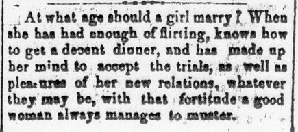

Columns 3-5: This space was usually filled with items taken from other newspapers, and tended to be selected in an effort to give a feel for the atmosphere of another place--through travel accounts or descriptions of unusual or "thrilling" incidents, often delivered in the form of a story. These items were not unlike those selected to appear on page 1, though they tended to be longer.  Other articles appearing in these columns dealt with morality and etiquette, and were not necessarily lengthy, such as the piece to the right discussing the proper marriage age for a woman.
Column 6: When not an extension of the types of material appearing in columns 3-5, column 6 often carried more poetry. This was especially true for the top half of the column.